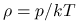

Set the aerosol phase function moments to the values specified in
the aerosol moments file
aerosol_moments_file file_name
where the file contains one column with arbitrary number of
Legendre terms of the phase function. The phase function
 is
 |
(1) |
where  is the m'th moment and is the m'th Legendre
polynomial. If not specified, a Henyey-Greenstein phase function is
assumed where the asymmetry parameter g is either a default value
depending on the aerosol type or it may be specified using
aerosol_set_gg. The phase function will be the same for all
altitudes and wavelengths. See aerosol_files if more
flexibility is wanted. May only be used together with the
cdisort or fdisort2 solver in combination with the option
disort_icm moments.
is the m'th moment and is the m'th Legendre
polynomial. If not specified, a Henyey-Greenstein phase function is
assumed where the asymmetry parameter g is either a default value
depending on the aerosol type or it may be specified using
aerosol_set_gg. The phase function will be the same for all
altitudes and wavelengths. See aerosol_files if more
flexibility is wanted. May only be used together with the
cdisort or fdisort2 solver in combination with the option
disort_icm moments.